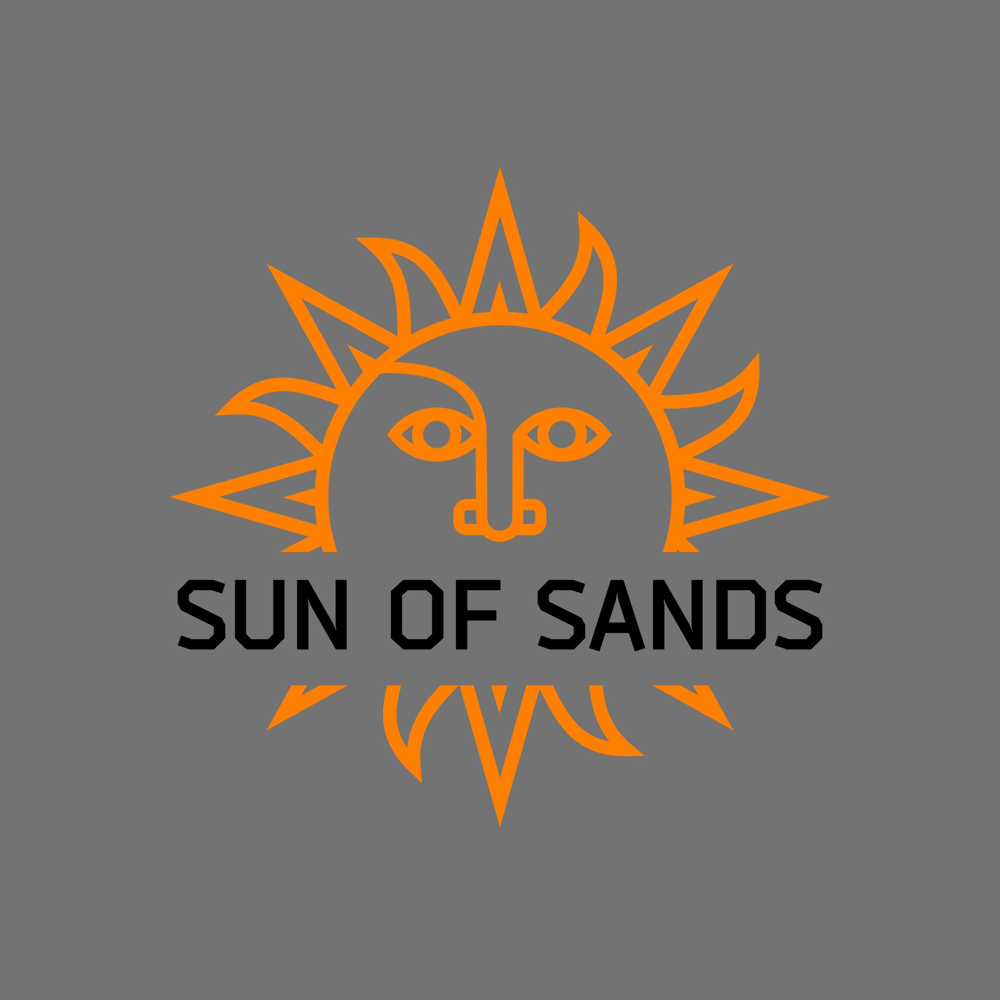
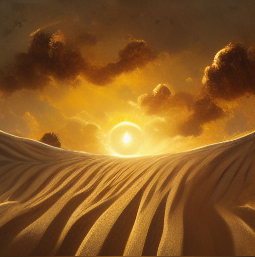

О нас в целом
Организация в игре
Как и в любых структурах в гейминге так же существуют организации
Эти организации принято называть Гильдиями
Как правило у гильдии есть Глава и его Свита у которой имеются свои обязанности
Принципы создания и расширения самой гильдии прописываются в правилах гильдии
Нарушение правил гильдии ведет к наказанию и возможному исключению из нее в дальнейшем
Любая успешная гильдия как правило следует не только своду правил, но и морали этики в самой игре
Гильдия Sun of Sands

В данную гильдию я попал относительно не давно и вот что мне в ней понравилось:
Отличное понимание механики боя
Хорошие межличностные отношения
Своевременное реагирование в экстремальных ситуациях
Добрейшей души рейд лидеры
Профессиональная сыгранность внутри рейда
Немного о рейдах
Рейд собирается в составе минимум 25 человек с возможными заменами
Вся коммуникация происходит в канале гильдии Discord
В Дискорде очень много полезных функций, начиная от создания учебных классов до проведения конференций
Процесс проведения рейда заключается в безукоризненном выполнении отведенной вам роли в игре
Есть три освновные роли, это танк отвлекает на себя основную угрозу и принимает большую часть урона на себя
Хиллер или же Хил, его задача не дать умереть всему рейду постоянно проводя заклинания исцеления
И наконец Демедж диллер он же ДД он же ДПСер, задача наносить максимальный урон
Разделение добычи происходит по одному из нескольких сценариев
На этом бы хотелось закончить описание игрового процесса и откланяться
